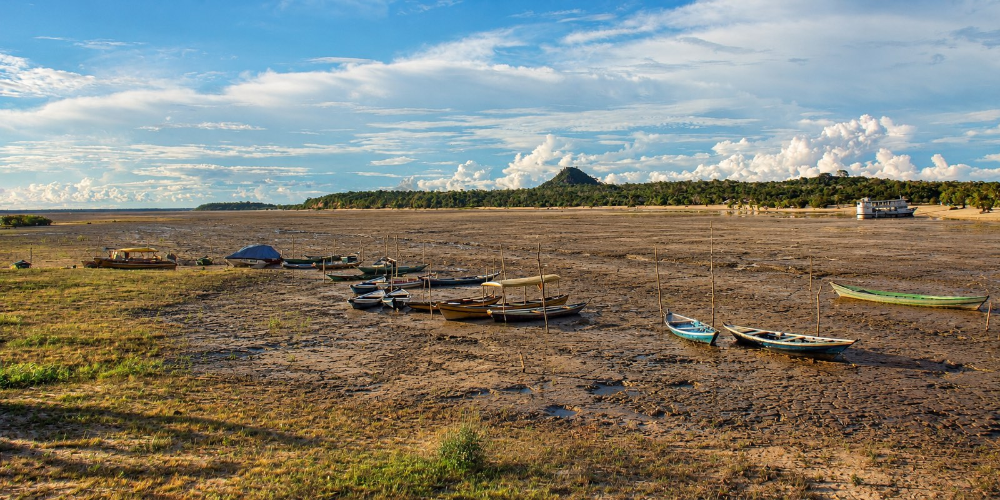
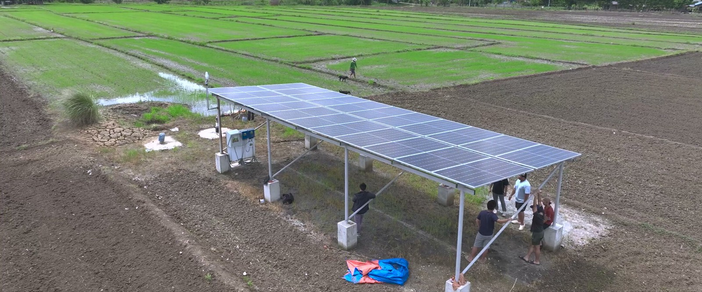

Visão e estratégia
O produtor no centro da água, da energia e da comida.
A agricultura responde por cerca de 70% da água doce retirada no mundo, e é ela que põe comida na mesa de todos. Ajudamos você a usar cada gota com a economia de um holandês e a colher mais. Pensamos junto com você e testamos no campo.
Fonte: FAO AQUASTAT. No mundo, 69% das retiradas de água doce vão para a agricultura.
Tudo começa em quem planta.
Quem decide quando irrigar, colher e vender é você. Nós entramos com as ferramentas: bomba movida a sol, irrigação guiada pelo solo, câmara fria para guardar a colheita.
- Arranjo solarSem combustível sem esperar a rede.
- Bomba solarDe superfície ou submersa.
- Irrigação inteligenteGotejamento, aspersão ou canal, com o volume medido.
- Sensores de campoUmidade do solo, do ar e clima.
- Decida quando colherIrrigação guiada por dados.
- Câmara fria solar3 tamanhos.
O que acontece no rio acontece na sua roça.
Primeiro sem a Agrotech da Holanda: cheia, seca, desperdício rio acima, água suja e uma colheita fraca, e o que cada um faz com a lavoura. Depois os mesmos riscos com a Agrotech da Holanda, e como a sua roça fica protegida.
O risco de faltar água muda de município para município.
O mapa mostra como a chuva, o calor e o solo mudaram em cada um dos 5.570 municípios. Veja o Brasil esquentar.
Toque numa cidade do mapa para ver os números.

São Paulo (SP)
- Chuva, 1980 a 2015
- −82 mm/década
- Mediana do Brasil: −35
- Dias acima de 35 °C
- 1 → 5 dias/ano
- Mediana do Brasil: 4 → 26
- Solo em déficit
- 11 meses
- Mediana do Brasil: 23
- Radiação solar
- 4,1 kWh/m² por dia
- Mediana do Brasil: 4,3
Toque numa cidade para ver os números.
Chuva de 1980 a 2015: quanto mais escuro, mais ela caiu.
Calor: de 1986 a 2005 → num mundo 2 °C mais quente. Solo: meses acumulados na série histórica.
Dados: Brasil 2C, Lobelia Earth e Instituto Itaúsa. Nível de triagem: não substitui um estudo local.
Ver o meu municípioA água toca em outras coisas que importam: energia e comida. No centro de tudo está você, o produtor.
Água, alimento e energia são um só problema na fazenda
Bombear água custa energia. A irrigação garante a safra. Guardar a safra custa energia de novo. Trabalhamos onde os três se sobrepõem.
Quem cuida da água cuida da colheita dos próximos anos.
O rio que passa na sua terra passou antes por outras fazendas, e segue para outras depois. Na seca, todos sentem. Medir a água, irrigar só o que a planta pede e nunca abrir floresta para isso: é assim que a terra se regenera e a roça segue produzindo.


Uma visão que dá para construir, passo a passo.
Primeiro vem um piloto de verdade. Medimos tudo, do primeiro ao último dia. O que der certo no Brasil, e o que não der, aprendemos junto com você.
- Conversa
- Projeto
- Construir e medir
- Primeira referência
- Já funciona fora do BrasilA Dutch Flow Technology já opera um sistema em San José, nas Filipinas.
- Dados abertos para vocêProjeto e sensores no piloto, com as leituras na sua mão.
- Gente perto de vocêUm representante em São Paulo, com disponibilidade para viajar.
- O primeiro piloto a preço de custoPara a primeira fazenda brasileira.

Faça parte
Seja uma fazenda que segue esta visão.
Procuramos produtores que querem colher mais com menos água, e testar isso no campo com a gente. Conte onde fica a sua roça e o que você planta.